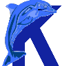

Call for Participation
Second International Conference on Knowledge Capture
October 23-25, 2003
Sanibel, Florida
Information in all forms is increasingly available, but using it effectively requires a range of technologies for representing, manipulating,
and reasoning with information. These technologies comprise Knowledge
Capture, the extraction of useful knowledge from vast and diverse
sources of information. Driven by the demands for knowledge-based
applications, and the unprecedented availability of information on the
Internet, the study of knowledge capture has a renewed importance.
K-CAP 2003 will provide a forum in which to bring together disparate
research communities whose members are interested in efficiently
capturing knowledge from a variety of sources and in creating
representations that can be useful for reasoning.
Conference Highlights:
- K-CAP 2003 will be co-located with the International Semantic Web Conference (ISWC). For more on ISWC, see: iswc2003.semanticweb.org
- K-CAP 2003 will showcase 22 outstanding technical presentations. For titles and authors, see: sern.ucalgary.ca/ksi/K-CAP/K-CAP2003/acceptedPapers.html
- K-CAP 2003 will include 5 workshops:
- Knowledge Markup and Semantic Annotation
- Knowledge Management and the Semantic Web
- Information Visualization in Knowledge Capture Technologies
- Distributed and Collaborative Knowledge Capture
- Capturing Knowledge from Domain Experts: Progress and Prospects
For workshop descriptions and organizers, see: sern.ucalgary.ca/ksi/K-CAP/K-CAP2003/
- K-CAP 2003 will include an invited talk by Dr. Paul Cohen
(UMass-Amherst): "How Robot Baby Learns Meaningful Representations".
For the talk's abstract, see: sern.ucalgary.ca/ksi/K-CAP/K-CAP2003/invitedTalk.html
- K-CAP 2003 will include coordinated presentations on three of the largest and most exciting projects on Knowledge Capture:
- DARPA's Rapid Knowledge Formation project
- EPSRC's Advanced Knowledge Technologies project
- Vulcan Inc's Project Halo
- K-CAP 2003 will be held on beautiful Sanibel Island in south Florida. For details, and to make reservations, see sern.ucalgary.ca/ksi/K-CAP/K-CAP2003/venue.html
For more information on the K-CAP Conference series, see: www.k-cap.org. To register for the Conference, see: sern.ucalgary.ca/ksi/K-CAP/K-CAP2003/registration/. The deadline for early registration is September 15, 2003.
